Landing collection · interactive UI preview
Landing Pages
Fourteen original Next.js landing pages. Browse their actual preview frames and open each live original.
LUI
01 / 14
Fourteen independent landing experiences
These are the original preview frames from the MIT repository. Open any local page to inspect the frame, then launch the original interactive site.
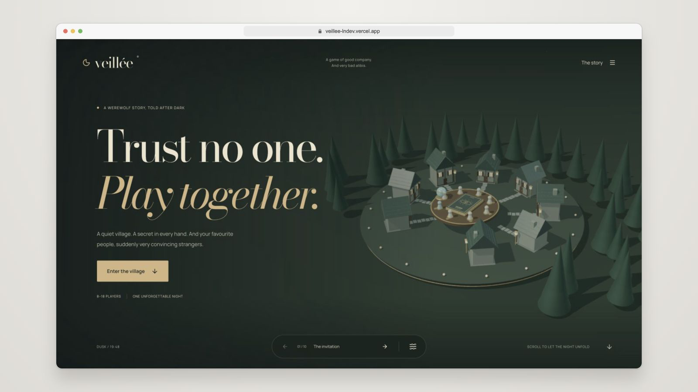
VeilléeWerewolf night
Inspect →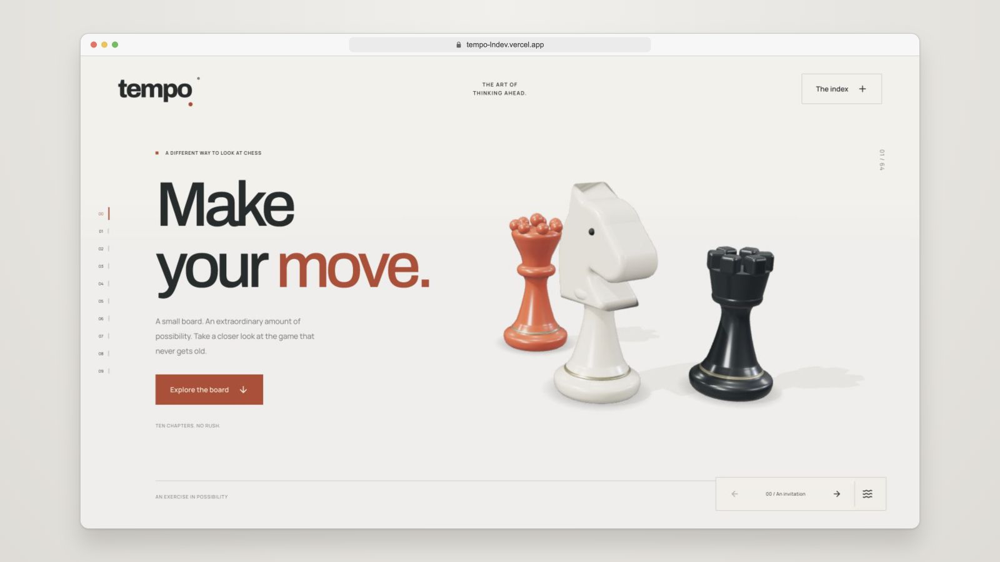
TempoSculptural chess
Inspect →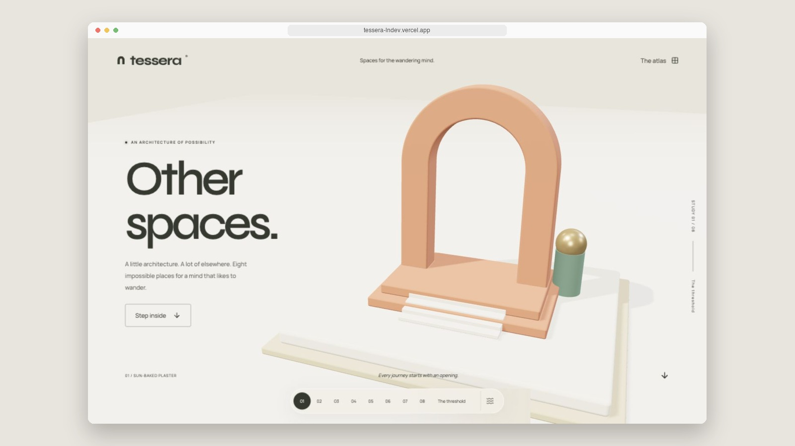
Tessera3D architecture
Inspect →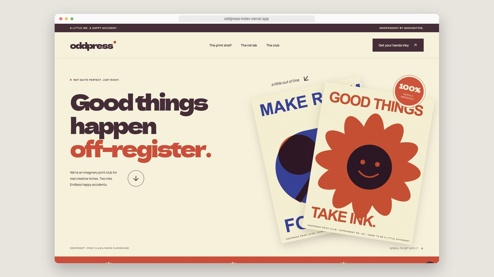
OddpressPrint and ink
Inspect →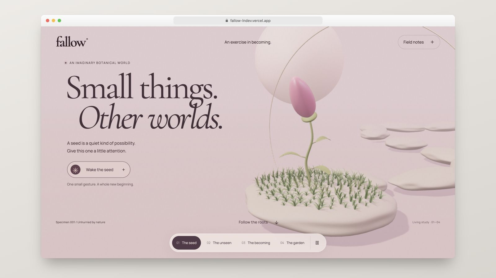
FallowBotanical story
Inspect →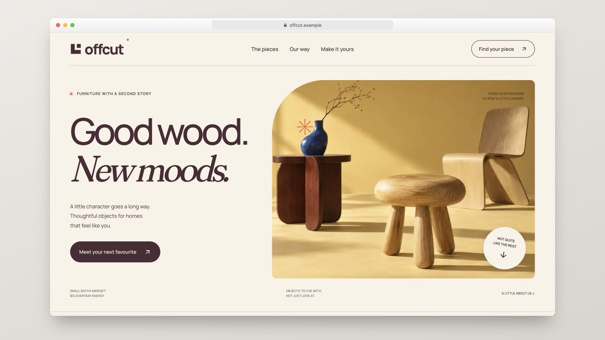
OffcutFurniture atelier
Inspect →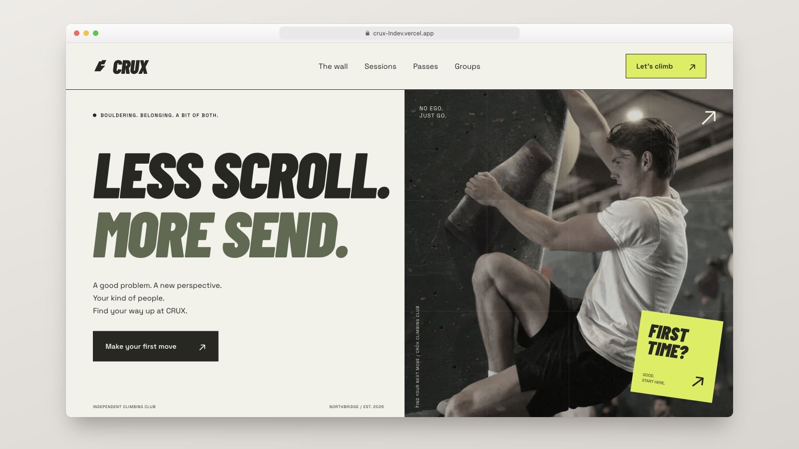
CruxBouldering club
Inspect →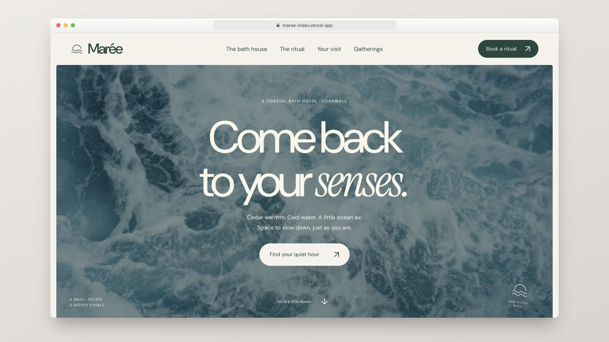
MaréeCoastal bath house
Inspect →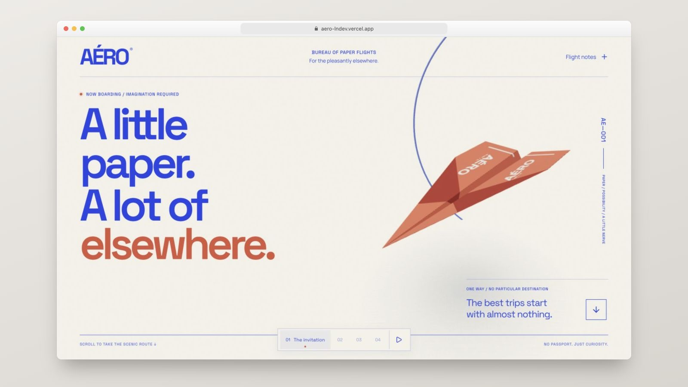
AéroPaper flight
Inspect →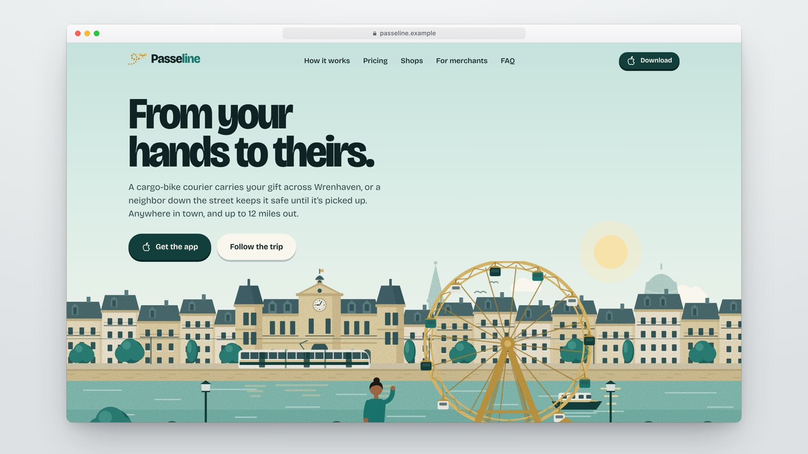
PasselineIllustrated gifts
Inspect →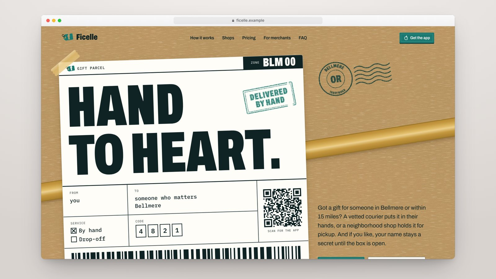
FicelleParcels and postage
Inspect →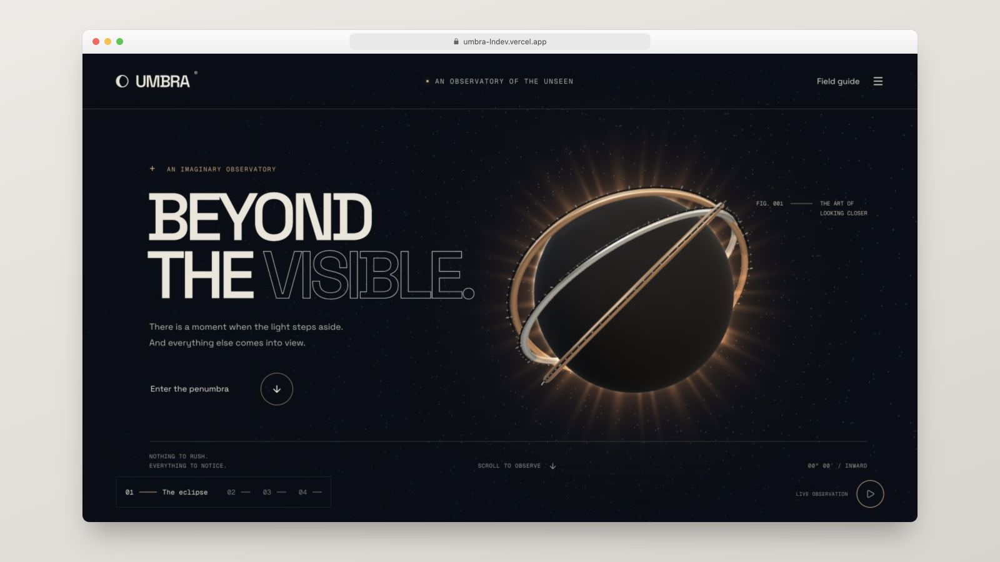
UmbraEclipse observatory
Inspect →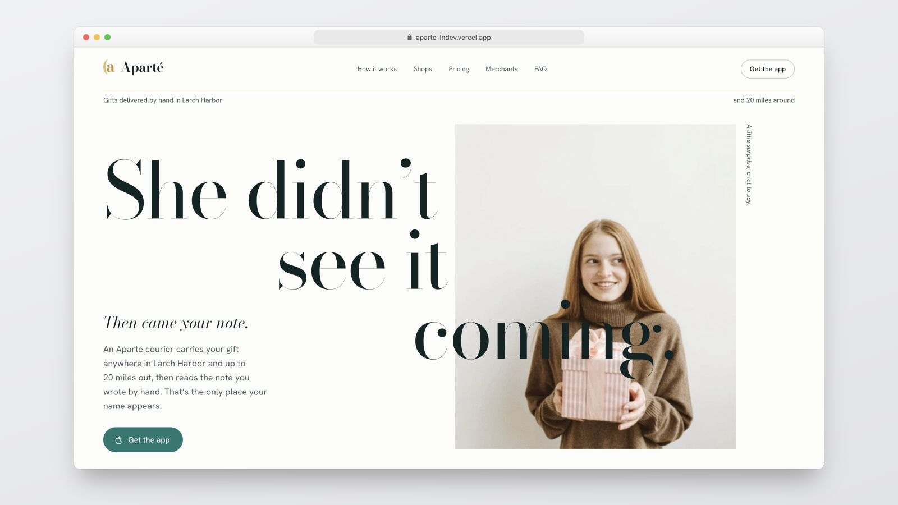
ApartéEditorial gifting
Inspect →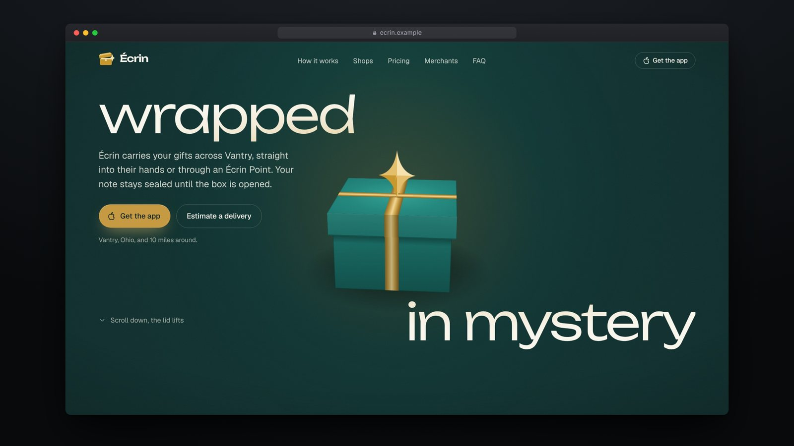
ÉcrinAnimated gift box
Inspect →Original thumbnails: ln-dev7/landing-pages, MIT. Full 3D and motion interactions run on the linked upstream sites.
SOURCE & INSTALLATION
Continue from the original project
Cloned and inventoried in prior Atlas task; 14 projects; no local native build recorded.
- Checkout
- Shallow source checkout
- Revision
3e32b3c78697- Licence noted
- MIT
- This page
- Local UI preview